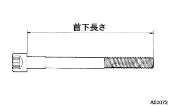
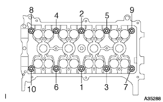
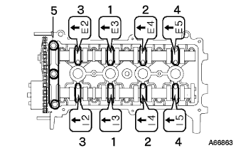
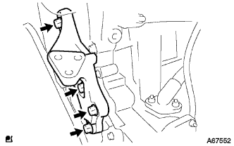
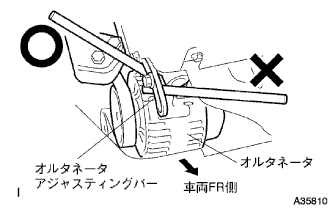

Installation of cylinder head gasket (1NZ-FE (4WD)) |
| 1. Cylinder headset bolt inspection |
|  |
Check the headbolt's head length using a caliper.
| 2. Installation of cylinder head gasket |
 |
Attach the head gasket to the cylinder block so that the lot number is up.
| 3. Cylinder head SUB-ASSY installation |
|  |
Apply a small amount of engine oil to the screw and seat of the cylinder head bolt.
Use a double hexagon wrench 8, temporarily tighten the cylinder to the cylinder in several times in the order of the figure, and then tighten it with a specified torque.
 |
To the cylinder, attach a paint mark to the engine front side of the head bolt head.
Use the paint mark as a guide and tighten the cylinder to 90 ° according to the tightening order.Furthermore, it is tightened by 90 ° according to the tightening order.
Confirm that all paint marks are at 180 ° tightened position.
After tightening the cylinder, apply a sticker packing black (4.5-5.5 mm in diameter) to the point in the figure.
| 4. Installing camshaft |
|  |
Apply engine oil to the camshaft cam and cylinder head journal.
With the timing mark of the camshaft timing gear at the top, set the camshaft and the camshaft No.2 on the cylinder head.
Check the front mark and numbers of the camshaft bearing cap No.2, divide them into several times in the order of the figure and tighten evenly.
Attach the No.1 camshaft bearing cap.
| 5. Engine wire connection |
Connect the engine wire.
| 6. Water bye pas pipe No.1 installation |
Put the water bypass pipe No.1 with two bolts and two nuts via a new gasket.
| 7. Hita Water Hose Outlet A Connection |
Attach the clamp and connect the heater water outlet hose A.
| 8. Hita Water Hose Inlet A Connection |
Attach the clamp and connect the heater water inlet hose A.
| 9. Fuel tube SUB-ASSY connection |
Connect the fuel tube.
| 10. Waterfira SUB-ASSY installation |
 |
With two bolts, attach the waterfira.
Connect radiator hose No.3 and radiator reservoir tank hose.
| 11. Radiator inlet hole connection |
Connect the radiator inlet hose and attach the clamp.
| 12. Radiator outlet hole connection |
Connect the radiator outlet hot and attach the clamp.
| 13. |
Connect the Union Tsu Connet Tube.
| 14. Installation of oil level gauge guide |
Apply the engine oil to the new O -ring and attach it to the oil level gauge guide.
Attach the oil level gauge guide with bolts.
Insert the oil level gauge into the oil level gauge guide.
| 15. Intake manifold installation |
 |
Attach a new gasket to Intake Mani Hold.
After temporary tightening the intake manifold in the order of the figure, tighten it with a specified torque.
Connect the wire harness to the intake mani -hold.
With two bolts, attach a vacuum tube for the brake booster.
| 16. Slottle body ASSY installation |
Attach a new gasket to Intake Mani Hold.
In the bolt and two nuts, attach the throttle body body asy and the accelerator control cable bracket.
Connect the connector of the throttle position sensor and idol speed control valve.
| 17. Water byepass hose No.2 connection |
Connect the water byepass hose No.2.
| 18. Water byepass hose connection |
Connect the water byepass hose.
| 19. Accelerator Control Cable ASSY connection |
Connect the accelerator controlled cable to the throttle body assembly.
| 20. Manihold support bracket installation |
 |
With three bolts, attach a manifold support bracket.
| 21. Oxyde EnsenConector Connection |
 |
Connect the connector.
Attach the harness stay with bolts.
| 22. Exhaust pipe ASSY FR connection |
Use caliper to measure the free length of the compression spring.
 |
The new gasket is gradually driven to the exhaust manifold using a wood piece and a hammer.
With two bolts, attach the exhaust pipe ASSY FR to the exhaust manifold.
| 23. Chain SUB-ASSY installation |
 |
Attach the chain by matching the mark plate (yellow) at the position of the figure and the timing mark.
The chain is tied with a string near the crankshaft timing sprocket so that the mark plate and the timing mark do not come off.
| 24. Chain tensioner ASSY No.1 installation |
 |
Push the plunger in the back while the lock is unlocked.
 |
Put the stopper plate down from the state where the plunger was pushed into the back and lock the plunger.
 |
Insert a φ3mm stick or hexagonal wrench into the hole of the stopper plate from the locked state.
Attach the chain tensioner ASSY No.1 with two bolts.
| 25. Chain vibration Dampa No.1 Installation |
Attach the chain vibration dampa No.1 with two bolts.
| 26. Chain tensioner slippers installation |
Attach the chain tensioner slippers with bolts.
Drug the hexagonal wrench from the stopper plate of the chain tensioner ASSY No.1.
Take off the string.
| 27. Installation of oil pump seal |
 |
Use the SST to hit a new oil seal evenly to the end of the oil pump.
Apply a small amount of MP grease No.2 to the lip of the oil seal.
| 28. Oil pump assignment |
 |
Attach a new O -ring to the point of the figure.
Apply a sticker packing to the engine itself and the oil pump.

 |
The oil pump dried brotasplain part is set to the two -sided part of the crankshaft, and the oil pump asser is inserted into the crankshaft.
 |
Attach the oil pump ASSY with 15 bolts and nuts.
| 29. Engine Water Toppm ASSY installation |
 |
Attach the water pump with three bolts and two nuts via a new gasket.
| 30. Water pump pulley installation |
 |
Use SST to fix the water pumpuri.
Tighten the three bolts.
| 31. Installation of engine mounting bracket RH |
|  |
Operate the jack and make the engine mounting bracket RH attached.
With four bolts, attach the engine mounting bracket RH.
| 32. Installation of engine mounting insulator SUB-ASSY RH |
 |
Operate the jack and attach the engine mounting insulator RH with 5 bolts and nuts.
| 33. Camshaft Timing Oil Control Valve ASSY installation |
At the bolt, attach the camshaft timing oil control valve.
| 34. Crank position sensor installation |
 |
Apply a small amount of engine oil to the O -ring.
Attach the crank position sensor with bolts.
Connect the connector.
| 35. Crankshaft Dampa SUB-ASSY installation |
 |
Combine the crankshaft dampa straight pin hole and the crankshaft straight pin and attach the crankshaft dampa.
Use SST to fix the crankshaft dampa and tighten the bolt.
| 36. Cylinder head cover SUB-ASSY installation |
 |
Apply a sticker packing black to the position in the figure and attach the cylinder head cover.
 |
Attach the cylinder head cover with nine bolts and two nuts.
Close the bolt and nuts in several times in the order of the figure.
| 37. Air cleaner ASSY installation |
Attach the air cleaner case and air cleannine let No.1 with four bolts.
Attach the air cleaner filter element.
Attach the air cleaner cap and air cleaner hose ASSY.
| 38. Ventilation hose No.2 installation |
Attach the No.2 ventilation hose.
| 39. Attach a ventilation hose |
Attach a ventilation hose.
| 40. Ignition coil No.1 installation |
Attach the No.1 ignition coil No.1 with bolts.
| 41. Cylinder head cover No.2 Installation |
 |
After tightening the nut A2, attach the nut B2 No.2 cylinder head cover.
| 42. Alternator Assorted |
 |
Temporarily attach the alternator with Bolt B.
 |
After tentatively attaching the fan belt agasting bar with bolt A and nuts, the alternator is reached to the cylinder block side to tighten the nut.
Attach a wire harness clamp.
Connect the connector.
Attach the+B terminal with a nut.
Attach the terminal cap.
| 43. Vane pump V belt (power steering belt) installation |
The V belt is temporarily attached to each pulley.
| 44. Vane pump V belt (power steering belt) adjustment |
 |
Adjust the tension of the V belt and tighten the bolt B for adjustment.
Tighten the fixing bolt A.
| 45. Fan & Alternator V belt installation |
The V belt is temporarily attached to each pulley.
| 46. Fan & Alternator V belt adjustment |
|  |
Use a hub nut wrench or bar to press the alternator to the vehicle front side to adjust the tension of the fan & alternator V belt.
 |
Tighten the adjustment bolt A and then tighten the fixing bolt B.
| 47. V belt tension / deflection quantity inspection |
 |
Tensions and quantity inspection
| When installing a new one "M" | At the time of inspection "M" | |
|---|---|---|
| Alternative belt | 7-8. 5 | 11 -13 |
| P/S belt | 8-0 | 11 -13 |
| When installing a new one "N ｛KGF}" | At the time of inspection "N ｛KGF}" | |
|---|---|---|
| Alternative belt | 539-637 {55-65} | 245-392 {25-40} |
| P/S belt | 441-539 {45-55} | 245-343 {25-35} |
| 48. Read tire RH installation |
| 49. |
| 50. Engine oil replenishment |
| 51. Cooling solution (Toyota genuine super LLC) replenishment |
Close the radiator drain kotsuku plug and injection of cooling water until overflowing from the radiator injection.[*1]
Tighten the radiator cap.
Inject the cooling solution into the radiator reserve tank to the upper limit.
Warm up the engine until the thermostat opens.
Stop the engine, wait for the cooling to cool, remove the radiator cap to check the water level.
If the water level is lowered, repeat from [*1].
When the water level does not fall, adjust the cooling solution of the radiator reservoir battank.
| 52. Engine oil leak inspection |
| 53.Fuel leak inspection |
Confirm that there is no leak in the fuel system with the fuel pressure.
| 54. Cooling solution (Toyota genuine super LLC) leak inspection |
Fill the cooling solution and attach the tester.
137k Pup {1. 4kgf / cm2Put the pressure of} and confirm that there is no leak in each part.
| 55. Engine undercover RH installation |
With two screws and two bolts, install the engine and cover RH.
Tighten the nut.
| 56. Initialization when removing battery terminal |
reference